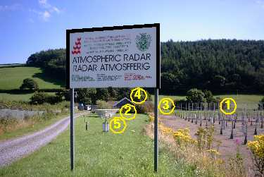

|
The mission of the NERC MST Radar Facility at Aberystwyth is
to provide high-quality atmospheric data products to the UK
academic community in support of environmental research and
education. The data are freely
available through the British Atmospheric Data Centre
(BADC)
The instruments associated with the Facility are
- The 46.5 MHz NERC MST Radar
(a wind-profiler)
- The 1290 MHz UFAM mobile boundary-layer
wind-profiler
- A Met Office GPS water vapour receiver
- The
Univeristy of Wales Aberystwyth aerosol/ozone lidar, which is run
on a campaign basis only
- A NERC climate data logger for
measuring surface temperature, pressure, humidity, rainfall and
solar radiation; surface wind
measurements are made from a nearby site
A 915 MHz Met Office
boundary-layer wind-profiler was previously operated at the
MST Radar site.
The Met Office make operational use of data from the MST Radar
for numerical weather prediction.
|
|

The NERC MST Radar Facility at Aberystwyth is a collaboration
between the Department
of Physics at the University of Wales Aberystwyth and the Space Science and Technology
Department (SSTD) of the Rutherford Appleton Laboratory
(RAL); RAL is a part of the Central Laboratory of the Research
Councils (CLRC). The facility is funded by the Natural Environment Research
Council (NERC).
|